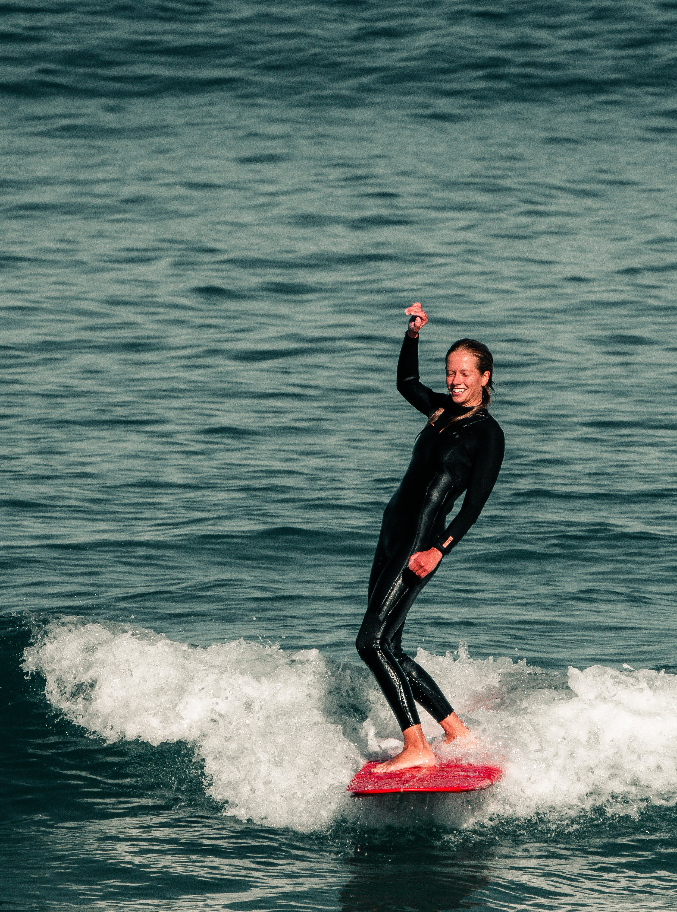
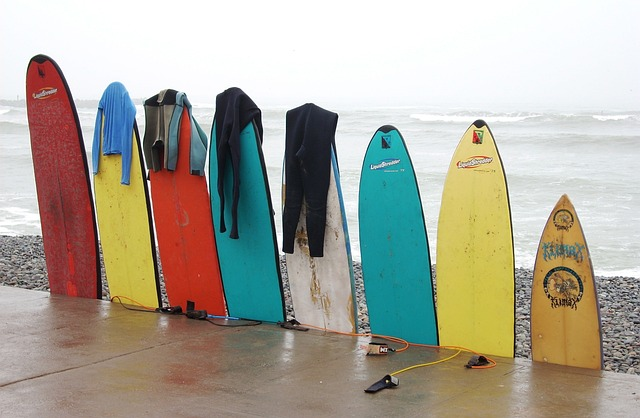
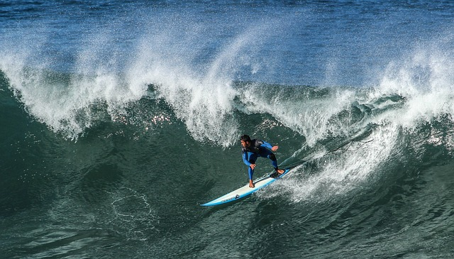

La importancia de leer el mar en el surf para principiantes
Tómate tu tiempo y observa el océano. Tal vez estaría bien sentarse en la playa por un tiempo y si existe la posibilidad pregunta a los surfistas locales.
Trata de averiguar dónde está la corriente de resaca. Siempre que sea posible aprovéchala.
Averigua en qué dirección van las corrientes costeras que viajan paralelas a lo largo de la playa.
Encuentra un punto de referencia fijo en la playa en el que te concentrarás cuando estés en el agua,
para evitar ser empujado por las corrientes costeras sin darte cuenta. Este es un factor importantísimo en el surf para principiantes.
Aprende algo sobre las corrientes en este post sobre seguridad en el surf.

¿Cómo hay que comportarse en el mar?
Reglas del surf
Ningún principiante quiere tener problemas con los niños y niñas «grandes». Probablemente te reirás, pero hay personas que se gritan en el agua y reman hacia la playa para luchar entre sí por una ola,
esto ocurre en casi todas las playas.
Para las personas ajenas a este mundo del surf es un espectáculo cinematográfico divertido pero no olvidemos que es totalmente innecesario y evitable cuando uno sabe cómo comportarse en el agua.
Revisa las reglas del surf.
Recuerda cómo comportarte en el océano y en el pico y también recuerda quién tiene la prioridad,
se amable para evitar conflictos cuando cometas el típico error que pueden cometer los principiantes en las sesiones de surf.
Práctica el Take Off/Pop-Up en tierra
Los movimientos básicos de pop-up/despegue no son algo que solo se practica en el surf para principiantes.
Incluso los surfistas profesionales siguen trabajando esto en sus entrenamientos. Algo así como un saludo al sol en el yoga. Los principiantes lo hacen, y los gurús también.
Se busca llegar al punto en que no necesites pensar en tu movimiento, casi que sea un reflejo.
Entonces tu cuerpo simplemente fluye para que puedas concentrarte en la ola. ¿Quieres mejorar la puesta en pie en surf?
Entrena la técnica de remada, esto es un básico del surf para principiantes
Remar correctamente es otro de los factores imprescindibles en el surf para principiantes.
Entrena la técnica de remada, además de esto, aprende a aprovechar las corrientes que te acercarán al pico.
Rema en la dirección correcta y no te interpongas en el trayecto del surfista que va en la ola.

Aprende a hacer correctamente los patos (cucharas o duck diving)
Los patos, cucharas o duck diving, es la técnica que emplearás para pasar las olas.
Aprender a realizar correctamente este movimiento te facilitará la vida para llegar al lineup.
Aquí os dejamos algunos buenos entrenamientos para mejorar los patos en surf.
Mantente activo en el agua
El surf es un deporte en el que necesitas observar el mar. Las olas no llegan hasta ti de manera automática.
Mantente activo en el agua, observa el horizonte y la dirección de las olas.
Nada hacia donde esté la mejor rompiente, mantente activo y busca tus olas.
Práctica el Wiping Out
¿Qué es eso del Wiping Out? pues no es otra cosa que aprender a caerse.
En los campamentos de surf y también en nuestras clases de surf en Cantabria es otra de las materias que impartimos. Aprenderás a no golpearte con la tabla de surf,
a caer correctamente cuando hay poca profundidad y mucho más.
Cada playa tiene su punto de marea
Como probablemente recuerdes de tus clases de geografía, hay mareas altas y mareas bajas en el océano. Estas se ven afectadas por la luna. Nosotros, como surfistas, tenemos que conocer las mareas adecuadas para cada spot porque las olas rompen sobre partes del fondo del océano más alejadas de la costa durante la marea baja y más cerca de la costa durante la marea alta.
Si eres principiante pregunta que punto de marea es mejor para el surf, marea alta o baja.
Por ejemplo, para llegar al pico podría ser una distancia menor de remada en determinados lugares durante la marea alta o incluso las olas podrían romper mejor y
durante más tiempo con la marea baja. O si me apuras, puede que en determinados spot solo se pueda hacer surf con marea baja y no con marea alta, o al revés.
Cuando eres principiante, asegúrate siempre de que haces surf con el punto de marea adecuado a cada spot.
Utiliza siempre invento(leash)
El invento o leash es quizá el elemento de seguridad más importante en el surf,
compra un invento para surf que ofrezca garantía, no escatimes en esto. El invento o leash es un elemento imprescindible a la hora de surfear.
Probablemente verás a algunos surfistas ‘experimentados’ ir sin invento pero nadando detrás de una tabla y
arriesgándose a que se golpee sin control contra las rocas o incluso poniendo en riesgo a otros surfistas.

Práctica cómo sentarse en la tabla de surf
Aunque pueda parecer que esto carece de importancia, nada más lejos de la realidad.
En el surf para principiantes esto es un factor fundamental, no solo porque te ayudará a descansar.
Sentarte en tu tabla de manera que puedas reaccionar rápidamente cuando veas la ola adecuada es la clave para poder atraparla.
Intenta encontrar tu equilibrio.
Practica pasar de estar sentado a una posición tumbada y descubre de qué lado es más fácil mirar hacia atrás para controlar una ola que se aproxima.